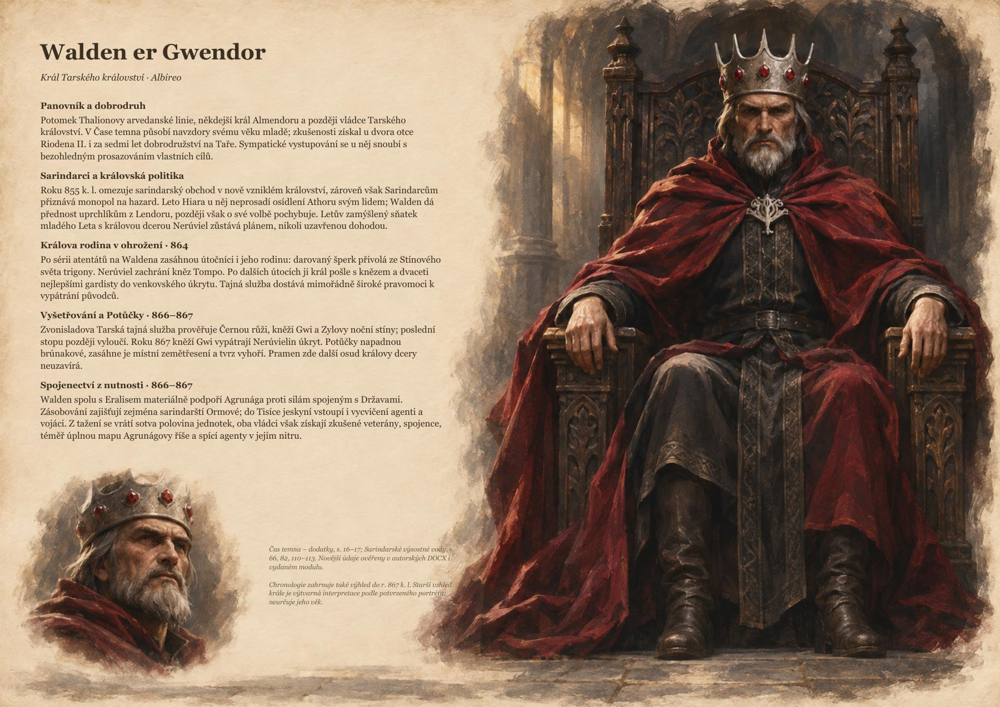

Varianty jmen a zbývající mezery
Starší soupis Cizí postavy obsahuje 480 zachycených jmenných položek. Zkrácené podoby, pravopisné rozdíly a nejednoznačné shody se nesmějí automaticky přičíst jako nové osoby. Níže jsou nevyřešené případy; podobnost názvu je pouze vodítko.
| Starší jméno | Pramen | Kandidáti k porovnání |
|---|
Všech 480 porovnání včetně řádků pramene
Co další průchod ještě musí vyřešit
Nezařazené texty vyjmenované samotným archivem, nové a rozpracované moduly, jména skrytá v obrazových stranách a nepojmenované ilustrace. Automatické výskyty ve zdrojích nejsou úplnou literární kontrolou každého životopisu.
Farias a Filipos byli v tomto průchodu dohledáni přímo v samostatných článcích, včetně dalších osmi pojmenovaných postav jejich příběhů. Filipos a Elizaběta jsou jediná osoba. Fariasův stejnojmenný děd je veden odděleně.
Krvavý příliv · šest připravených hrdinů
Walden podle Klíče bytostí
Dvě A4 podle Klíče bytostí: text vlevo, ilustrace vpravo. Vyber postavu a výtvarný styl:

PDF · dvě A4 · Celá dvoustrana · Ilustrace bez textu
Celá družina · 12 stran A4: Temná malba · Akvarel · Knižní ilustrace
Tři nové varianty vytvořené pomocí imagegen, 18. 11. 2026. Text doplněn podle Sarindarských výsostných vod (s. 66, 82, 110–113): Tarské království, Sarindarci, atentáty na rodinu a tažení v Tisíci jeskyních. Obsahuje také výhled chronologické přílohy do roku 867 k. l. Starší vzhled krále je výtvarná interpretace, nikoli údaj o jeho věku.
Podklady a předchozí sazební zkoušky
Podklady vybrané postavy · Prameny původní Waldenovy karty · Původní dvoustrana s dobovým portrétem · Walden na jedné A4 · Saša, srovnání se SVV
Jak je soupis sestaven
1. Modul → článek → rejstřík
Moduly a jejich původní přílohy mají při věcném ověřování přednost. Články z Dechu draka, Pevnosti a webu tvoří druhou vrstvu. Siomenův archiv a Obsidian slouží jako rozcestník s přesnými odkazy. Beletrie má vlastní pole. Pracovní texty a odvozené přepisy nejsou vydávány za potvrzený kanon.
Všech 3 567 záznamů listu POSTAVY bylo porovnáno po polích s přiloženým původním XLSX v17; rozdílů: 0. Datum původního Obsidian inventáře je 26. 10. 2026. Dnešní dohledání přidalo kontrolu 113 textů článků, textové hledání v 63 časopiseckých souborech a vizuální kontrolu 105 vybraných časopiseckých stran.
2. Důležitost a doloženost
Stupně 1–5 jsou převzaty ze Siomena: 62 / 417 / 1 428 / 1 391 / 269 záznamů. Slovní názvy stupňů v rozhraní jsou pracovní vysvětlení. Uvnitř stupně se předřazují panovnické role a poté počet citovaných modulových a článkových pramenů. Počet kopií souboru nezvyšuje význam.
Pořadí je pracovní redakční pomůcka, ne kanonický žebříček. Význam není odvozen z bojové úrovně. U nově nalezených CP je odhad označený zvlášť; u doplňkových bohů a exemplářů zatím zůstává nestanovený.
3. Co znamená nalezený obraz
Galerie obsahuje fyzicky dostupné a prohlédnuté obrazy. Rozlišuje portrét přímo v původním článku, pojmenovaný obrazový soubor, propagační vizuál a pravděpodobné přiřazení. U obrazů je uveden původ; časopisecké portréty mají přesné označení čísla a stránky. Waldenova autorská Midjourney vizualizace je označena samostatně. Gerondův rodokmen, mapy Tary a obecné názvy jako „Temný“ byly vyřazeny z portrétů.
„Portrét zatím nedoložen“ neznamená, že nikdy neexistoval. U Boreka Chvostovíta zůstává přiřazení kněze se psem pravděpodobné. Narzian Šedý a Narian er Zurk jsou rozdílné postavy.
4. Období a identita
Archivní „současný“ a značky * / † nejsou univerzálním stavem pro každou kampaň. Například karta Raxentira musí určit, zda jej zachycuje během jeho působení jako nájemného mága, nebo zda už pracuje s pozdějším osudem. Stejnojmenné osoby se neslučují pouze podle názvu.
Auditní data
Seřazený seznam CSV · Katalog ke stažení · Obrazový rejstřík · Kontrola původního XLSX · Rozsah a omezení · Vizuálně kontrolované časopisecké strany